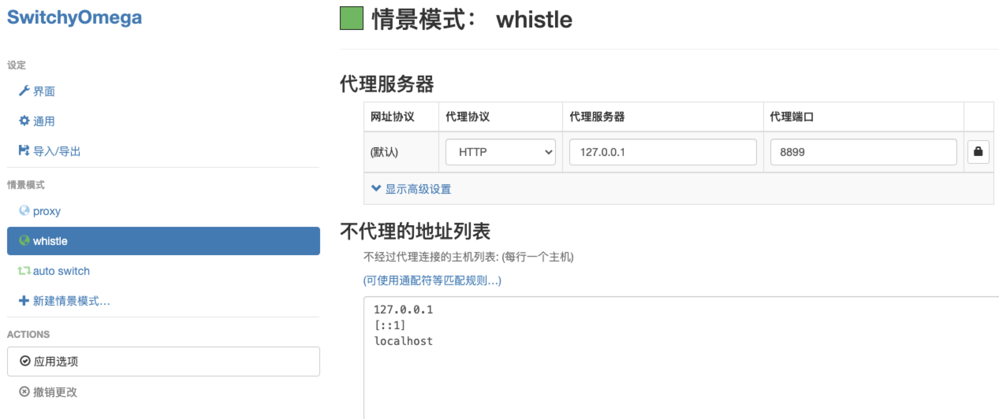

抓包工具
本文最后更新于：2022-01-19 13:14:53
介绍几种常用的抓包工具
一、 Charles,中文名青花瓷，最常用的抓包工具
二、 whistle 工作中经常用到
1. whistle文档
2. 常用命令
1
2
3
4
5
6
7
8
9
10
11
12
13
14
# 安装whistle
npm install -g whistle
# 帮助
w2 help
# 启动
w2 start
# 重启
w2 restart
# 停止
w2 stop
3. 代理调试
新增情景模式 whistle(名字随意取一个)如图
注意：whistle启动的默认端口为8899

此时在chrome插件栏SwitchyOmega看到whistle情景模式代表配置成功。
注意：可以直接使用whistle情景模式或者使用auto switch模式（指定域名是用whistle）

- 电脑安装证书
- 在终端启动whistle
ws start - 访问http://local.whistlejs.com/
- 找到https选项打开会有
Download RootCA的链接，下载并信任即可（勾选Capture TUNNEL CONNECTs才可抓取到https的请求）

- 手机安装证书（通电脑）最后扫码安装即可
4. 具体使用
在network中可以看到抓到的接口
在rules中新增tab并加入你要代理的端口和域名
1
2# 把http://127.0.0.1:8886代理到https://moyuderen.cloud.com
https://moyuderen.cloud.com http://127.0.0.1:8886插入js,html等文件，已html为例，在values里添加一个tab(vconsole前端调试神器)
1
2
3
4
5
6
7{vconsole}
<script src="https://unpkg.com/vconsole@latest/dist/vconsole.min.js"></script>
<script>
// VConsole 默认会挂载到 `window.VConsole` 上
var vConsole = new window.VConsole();
</script>在rules中添加
1
2
3
4
5
6
7
8
9
10
11
12
13# preview环境注入vconsolo代码
https://moyuderen.preview.com html://{vconsole}
# 线上环境注入vconsolo代码
https://moyuderen.apps.com html://{vconsole}
## 接口500调试
https://moyuderen.api-preview.com statusCode://500
## 插入本地文件
www.ifeng.com html:///User/xxx/test/test.html
www.ifeng.com js:///User/xxx/test/test.js
www.ifeng.com css:///User/xxx/test/test.css
三、 spy-debugger
1. 安装
npm install spy-debugger -g
2. 启动
(默认端口：9888)spy-debugger -p 8888
3. 其他操作
设置外部代理（默认使用AnyProxy）
spy-debugger -e <http://127.0.0.1:8888>
spy-debugger内置AnyProxy提供抓包功能，但是也可通过设置外部代理和其它抓包代理工具一起使用，如：Charles、Fiddler。设置页面内容为可编辑模式
该功能使页面内容修改更加直观方便。 (默认： false)
spy-debugger -w true
内部实现原理：在需要调试的页面内注入代码：document.body.contentEditable=true。暂不支持使用了iscroll框架的页面。是否允许weinre监控iframe加载的页面
(默认： false)
spy-debugger -i true是否只拦截浏览器发起的https请求
(默认： true)
spy-debugger -b false
有些浏览器发出的connect请求没有正确的携带userAgent，这个判断有时候会出错，如UC浏览器。这个时候需要设置为false。大多数情况建议启用默认配置：true，由于目前大量App应用自身（非WebView）发出的请求会使用到SSL pinning技术，自定义的证书将不能通过app的证书校验。是否允许HTTP缓存
(默认： false)
spy-debugger -c true
本博客所有文章除特别声明外，均采用 CC BY-SA 4.0 协议 ，转载请注明出处！